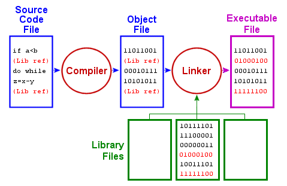
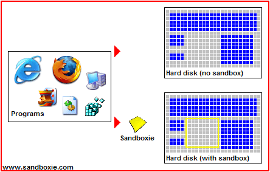
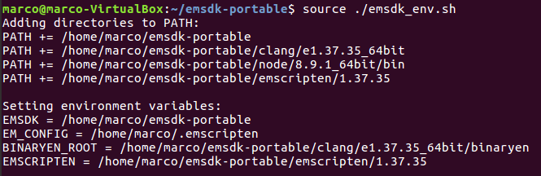
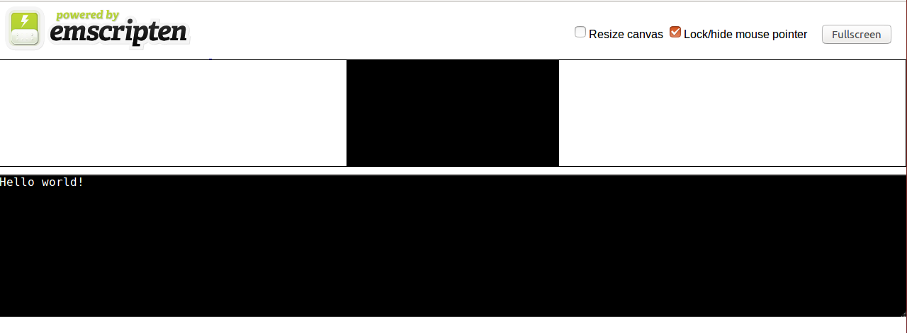
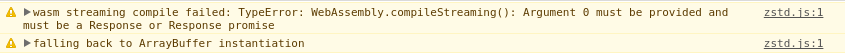

Table of contents
Introduction
Webassembly (WASM) is an innovative low-level language that can run on all modern browsers. As the name suggests, this is an assembly-like language that have a very compact binary format (thus suitable to be loaded on web pages) and can run with near-native performance.Thanks to this technology, there is now the possibility to compile high-level languages and run them on the browser. Currently the only languages that can be compiled to WASM binaries are C and C++, but in future the list will probably grow a lot.
It is important to point out that WASM is not going to cut off JavaScript, you will still need it for several reasons that will be explained later on.
In this tutorial, you will learn the basics concepts behind this technology and then you will be ready to create a complete Webassembly-based WebApp!
Furthermore, I am going to guide you through all the concepts by using examples inspired to what I learned creating an online WASM-based file compressor.
So... Let's get started!
Key concepts
There are a few key concepts that we need to know about WASM:- Module: it is the compiled binary code (in other words, the .wasm file).
- Memory: a JavaScript typed array that represents the memory for your program.
- Table: an array (separated from the memory) that contains the references to the function that you use.
- Instance: it is the union of a Module, a Memory and a Table plus some other values that needs to be stored.
WASM workflow
If you are familiar with compiled languages, you probably know the steps that your code go through before being executed. Just as a reminder: If you worked with C/C++, you probably used compilers like gcc or similar. In order to get a Webassembly binary file, we will need some other special compilers. There are more than one available, but currently the best one is Emscripten (and it is open source!).
Differently from the "normal" assembly languages, Webassembly is not CPU specific and therefore can run on multiple platforms, from embedded systems like your phone to the CPU of your computer.
Once we compile our C/C++ code with Emscripten, we obtain a proper WASM file that can run on the browser, pretty straightforward right?
Actually, there are a few more details to consider, but we will cover them step by step.
Briefly, the steps to get your WASM WebApp working are:
- Compile C/C++ code with Emscripten, to obtain a WASM binary.
- Bind your WASM binary to your page using a JavaScript "glue code".
- Run your app and let the browser to instantiate your WASM module, the memory and the table of references. Once that is done, your WebApp is fully operative.
Browser environment
It is really important to understand that WASM binaries are run in the same sandbox as JavaScript (in a nutshell, a sandbox is an isolated environment where your code is executed for security reasons). Therefore, you will be able to access only the data that are also accessible with JavaScript. This means, for example, that you will not be able to access a file like this (unless you preload it at compile time):
// "standard" C code to open a file
FILE *fp;
fp = fopen("/path/to/file/file.txt", "r");You will furthermore have some limitations in the memory you can dynamically and statically allocate, depending on the browser you are using (but these are usually pretty big, so it is unlikely that you will suffer from that).
Install Emscripten
First of all, let's install the WASM compiler, Emscripten. We will focus on how to install it for Linux, but you can find documentation for other OSes here.First of all you need to have a working compiler toolchain installed (the set of tools that allows you to compile the code and get an executable) since we will build the software from the source code. Open a terminal and type:
# Update the package lists
sudo apt-get update
# Install *gcc* (and related dependencies)
sudo apt-get install build-essential
# Install cmake
sudo apt-get install cmake- python 2.7
- node.js
# Install Python
sudo apt-get install python2.7
# Install node.js
sudo apt-get install nodejs- Download and unzip the Software Development Kit (SDK) package to the directory of your choice. Here is the the link.
- Open a terminal inside the folder
emsdk-portableyou already unzipped. - Now run the emsdk commands to obtain the latest tools from Github and set them as active:
At this point, you should see something like that. # Fetch the latest registry of available tools. ./emsdk update # Download and install the latest SDK tools. This may take a while ./emsdk install latest # Make the "latest" SDK "active" for the current user. (writes ~/.emscripten file) ./emsdk activate latest # Activate PATH and other environment variables in the current terminal source ./emsdk_env.sh
Your first WASM webapp
Once Emscripten is installed, we are ready to create our first WASM app!- Create a folder wherever you want that contains a C file with this simple code:
- With your previous terminal, move in to the new directory and compile the C code to WASM using Emscripten.
emcc hello.c -o hello.html -s WASM=1Important:Explanation:
when you open a new terminal you won't be able to run the emcc command. You will indeed obtain this error:
DON'T DO IT, the version that will be installed is outdated or broken and will give you tons of issues. Instead, just move back to theThe program 'emcc' is currently not installed. You can install it by typing: sudo apt install emscripten.emsdk-portabledirectory and type:
to activate the path and other environmental variables to this current terminal.source ./emsdk_env.sh
Then move again to the repository with the file to compile and go on with the compilation.
emccis the program you call to compile your C code (similar to call gcc or g++ when you compile your C/C++ files "normally").-o hello.htmltells the compiler to create the hello.html file so you can visualize the results of the WASM code.-s WASM=1tells the compiler to create a separated .wasm file. You can omit this and the everything will work the same, just your hello.js (see next point) will contain also the WASM binary.
-
Now you should be able to see other three files in the same directory:
hello.html,hello.jsandhello.wasm.hello.wasmis the file that contains the Webassembly code (the compiled code).hello.jsis the "glue code" needed to allow JavaScript to call and "communicate" with WASM compiled code. Emscripten generates this automatically and it is absolutely needed in order to run WASM modules. If you compile without the-s WASM=1flag this file will contain also the content of hello.wasm (but makes no difference in reality).hello.htmlis just a web page automatically generated that shows the result of your Webassembly code in a user friendly way. You don't actually need this file, but it is a cool way to quickly visualize what are you doing. You can tell Emscripten not to generate it by just using-o hello.jsinstead of-o hello.html(everything else remains as before).
#include <stdio.h>
int main(){
printf("Hello world!\n");
return 0;
}If you haven't tried to open the file hello.html file yet, do it with the browser of your choice. You should see something like this:
 If you open it with certain browsers (like Chrome) you may get an error message instead of the words "Hello World!".
That is because the operation of loading of the WASM module is asynchronous, and some browsers (for security reasons) do not allow you to do this if the URL is of the kind
file://path/to/file/file.html.In order to solve that issue you can both change the browser you use for testing (Firefox will work) or run a local server this way:
- open a terminal in the directory containing the file .html you want to run, and control your python version by typing:
python -V - and then run:
# if your version is 2.x python -m SimpleHTTPServer 8080 # if your version is 3.x python -m http.server 8080 -
At this point go in the browser and open (type in the URL)
localhost:8080. Note that the number 8080 is the same as the one you typed in the terminal previously (you can change it if you want, but be careful since not all the ports are for http).
Let's return talking about WASM.
The first thing that WASM does is execute the main of your code (if there is one). That is why you immediately see "Hello world!" printed in that pseudo-console.
Note that you don't actually need that pretty interface: try to open the console (press
F12 or Ctrl+Shift+C). You should be able to see the words "Hello World!" printed there as well. Indeed, all your prints are printed in that console, and you can use them to debug your C/C++ code.You can now try to create your own web page and run your short WASM-compiled code on that. Create a file .html and copy this simple code:
<script src="hello.js"></script>
<p>Open the console to see the result!</p>
You may see these warnings:  Just don't worry about them, we are not using that method to create our WASM instance.
Important:
everything we did in this section is perfectly transferable on a C++ code. Try changing hello.c to hello.cpp:
everything we did in this section is perfectly transferable on a C++ code. Try changing hello.c to hello.cpp:
#include <iostream>
int main(){
std::cout << "Hello world!" << std::endl;
return 0;
}
# note that also emcc will work as well
em++ hello.cpp -o hello.html
Important:
You can also compile your code using optimizations using
You can also compile your code using optimizations using
-Ox, try them out:
# -O2 is already a pretty high level of optimization
emcc hello.c -o hello.js -O2 -s WASM=1
Functions
So far we learnt how to build a simple WASM project. Let's make things more interesting by introducing functions.Edit the
hello.c code by adding a function to calculate the ith number in the Fibonacci sequence:
#include <stdio.h>
int fib(int n){
if(n == 0 || n == 1)
return 1;
else
return fib(n - 1) + fib(n - 2);
}
int main(){
printf("Hello world!\n");
int res = fib(5);
printf("fib(5) = %d\n", res);
return 0;
}Nothing special so far. But what if we want to call this function not just at the beginning (when main is executed) but when, for example, you press a button on the webpage?
This question basically translates to: how do I call C/C++ functions from the JavaScript of my web page?
The easiest ways to do this are to use two functions provided by the Emscripten "glue code":
ccall: calls a compiled C function with the specified variables and return the result.cwrap: "wraps" a compiled C function and returns a JavaScript function you can call normally. That is, by far, more useful and we will focus on this method.
var js_wrapped_fib = Module.cwrap("fib", "number", ["number"]);var result = js_wrapped_fib(parameter);- name of the function: name of the function in the C source code.
- return type: the return type of the function. This can be
"number","string"or"array", which correspond to the appropriate JavaScript types (use number for any C pointer), or for a void function it can benull(note: the JavaScript null value, not a string containing the word "null"). - list of parameter's types (optional): within square brackets. An array of the types of arguments for the function (if there are no arguments, this can be omitted). Types are as in return type, except that array is not supported as there is no way for us to know the length of the array.
Another important thing to notice is that Emscripten, during compilation, ignore all the functions that seem unused in order to get a smaller .wasm file. Thus, we need to let it know that we want to keep that functions "alive".
Again, there are two ways to do this:
- You can add
EMSCRIPTEN_KEEPALIVEto your C functions in the code as shown below:
In order to test it, compile the C code again, but this time tell the compiler to add cwrap as an extra exported runtime method by using this command:#include <stdio.h> #include <emscripten.h> // note we added the emscripten header int EMSCRIPTEN_KEEPALIVE fib(int n){ if(n == 0 || n == 1) return 1; else return fib(n - 1) + fib(n - 2); } int main(){ printf("Hello world!\n"); int res = fib(5); printf("fib(5) = %d\n", res); return 0; }
Then edit and run your custom .html file as below:emcc hello.c -o hello.js -s WASM=1 -s EXTRA_EXPORTED_RUNTIME_METHODS='["cwrap"]'
Each time you press the "Click me!" button you should see "The result of fib(5) is: 8" appearing on your console.<script src="hello.js"></script> <script> var js_wrapped_fib = Module.cwrap("fib", "number", ["number"]); function pressBtn(){ console.log("The result of fib(5) is:", js_wrapped_fib(5)); } </script> <button onclick="pressBtn()">Click me!</button> <p>Open the console to see the result!</p> -
Alternatively, you can just tell the compiler that you need that functions by using this command (this way you don't need to add anything to your C code):
Note that underscore before the function name, you will always have to add it.emcc hello.c -o hello.js -s WASM=1 -s EXPORTED_FUNCTIONS='["_fib"]' -s EXTRA_EXPORTED_RUNTIME_METHODS='["cwrap"]'
Test this again (you don't need to modify your custom .html file, just refresh the page).
You should also notice that the main is no more executed automatically, indeed, it is not even exported. You can add it to the list of exported functions:
Now your main will be again automatically executed at the beginning. You can also call it from JS whenever you want if you wrap it by adding (note that there are no input parameters):emcc hello.c -o hello.js -s WASM=1 -s EXPORTED_FUNCTIONS='["_fib", "_main"]' -s EXTRA_EXPORTED_RUNTIME_METHODS='["cwrap"]'var js_wrapped_main = Module.cwrap("main", "number");
At this point you may are wondering, how do I pass an array to a WASM function from JavaScript?
This will be covered in the section regarding the memory.
Important:
Exported functions need to be C functions (to avoid C++ name mangling). In order to solve that issue you can write in your C++ code:
Exported functions need to be C functions (to avoid C++ name mangling). In order to solve that issue you can write in your C++ code:
extern "C"{
int my_func(/* ... */){
// do stuffs
}
}Call JavaScript from C/C++
You can even call JavaScript functions from C/C++ code!The easiest way to do this is to use the
emscripten_run_script function. Edit your hello.c to:
#include <stdio.h>
#include <emscripten.h>
int main(){
printf("WASM is running!");
emscripten_run_script("alert('I have been called from C!')");
return 0;
}You can also call your custom functions and even pass parameters! Edit your call in hello.c to:
emscripten_run_script("set_background_color(1)");<script src="hello.js"></script>
<script>
function set_background_color(color_idx){
var color = "red";
if(color_idx == 1) color = "blue";
else if(color_idx == 2) color = "green";
document.body.style.backgroundColor = color; // set the new background color
}
</script>You may noticed that to pass parameters this way is not very easy.
Luckily, the function
EM_ASM (and its variants) allows you to write JS code, call JS functions, pass parameters and even get return values, in a much more flexible way. Have a look at the following example (you don't need to change anything in the your .html code):#include <time.h> // for time
#include <stdlib.h> // for rand
#include <stdio.h>
#include <emscripten.h>
int main(){
printf("WASM is running!\n");
srand(time(NULL)); // initialize random seed
int color_idx = rand() % 3; // could be 0, 1 or 2
EM_ASM(
// here you can write inline javascript code!
console.log("(1) I have been printed from inline JavaScript!");
console.log("I have no parameters and I do not return anything :(");
// end of javascript code
);
// note the underscore and the curly brackets (to pass one or more parameters)
EM_ASM_({
console.log("(2) I have received a parameter! It is:", $0);
console.log("Setting the background to that color index!");
set_background_color($0);
}, color_idx);
// note that you have to specify the return type after EM_ASM_
int result = EM_ASM_INT({
console.log("(3) I received two parameters! They are:", $0, $1);
console.log("Let's return their sum!");
return sum($0, $1);
function sum(a, b){
return a + b;
}
}, 13, 10);
printf("(4) The C code received %d as result!\n", result);
return 0;
}There is also a way to create a C API in JavaScript, but that requires a bit more work. If you are interested, you can find a good explanation of how to do it here.
Libraries
You may have noticed that we already compiled some libraries with Emscripten. However, these were all "standard" libraries. Indeed, Emscripten already provides these libraries ready to be compiled.But what if you wanted to compile a non-standard library with Emscripten?
The process is very similar to the one we have already seen to compile the C files.
In case your library is small and has just some source files (
.c or .cpp) and some headers file (.h) you just have to compile your "main" source file and your C code binding them together.If you want, you can download the source and the header of this very simple expression parsing library (found on github):
- header tinyexpr.h (2 KB),
- source tinyexpr.c (20 KB).
#include <stdio.h>
#include "tinyexpr.h"
int main(){
// te_interp just evaluates the expression in the string and returns a float
printf("The result of (2+23)/5-1 is: %f\n", te_interp("(2+23)/5-1", 0));
return 0;
}emcc hello.c tinyexpr.c -o hello.html -s WASM=1Note that you don't need to export any function here because you call
te_interp from the main of your C code and so it is automatically exported.If you want, you can wrap
te_interp using cwrap and then you can call it from directly from JS as we have seen before (note that in this case you have to specify it as an exported function, if you don't use it also in the main).But pay attention: the first input parameter of that function is a string (
char*) so it may would be better to read the section about memory before trying to actually use it from JS.If the project is more complex and contains shared libraries (
.so), static libraries (.a) or object files (.o or .bc) here you can find a very good explanation on what to do. Remember that you may however need the flag EXPORTED_FUNCTIONS in order to let the compiler know which functions you want to use.For example, that is the command I used to compile the zstd compression library for the WASM file compressor I wrote:
emcc lib/libzstd.bc -o zstd.js -O2 -s WASM=1 -s EXPORTED_FUNCTIONS="['_ZSTD_compress', '_ZSTD_compressBound', '_ZSTD_isError']" -s EXTRA_EXPORTED_RUNTIME_METHODS="['cwrap']" -s ALLOW_MEMORY_GROWTH=1 -s ABORTING_MALLOC=0Memory
So far, we have learnt quite a lot about how to use WASM and its features but we never talked about memory.As stated at the beginning, WASM works in a protected environment (sandbox) and cannot directly access the memory out of it. The "trick" is that the memory needed for the execution of our C/C++ program, is represented by a JavaScript typed array.
When the JavaScript "glue code" is loaded, the array representing the WASM memory is automatically instantiated. Clearly, you can access this object from both JS and your C/C++ code (as if it was your "normal" memory), and this allows a sort of communication between the two sides.
In order to understand what we are talking about, just run one of the previous examples, open the console and type:
Module.HEAP8HEAP8 is just a way you can use to view memory as composed by 8-bit signed integers. That, of course, is not the only view, here there is the complete list of what you can use, in case you need something different.
In other words, even if the array (the C/C++ memory) containing the data is exactly the same, we can look at it in different ways in order to work with different data types (you will see an example later).
Why should we bother about this? Well, directly writing the memory is actually the easiest way to pass data structures like arrays and strings (or even the content of a file) to WASM.
Scared of writing directly on raw memory? You don't have to be, just make sure you understand everything you do.
Important:
For the next parts you need to be a bit familiar with:
For the next parts you need to be a bit familiar with:
The easiest way to set or get a value from WASM memory is to use two runtime methods you can export during compilation (as we did for cwrap):
setValue(ptr, value, type)getValue(ptr, type)
The type argument is just the type of the value we want to get or set. The list of alternatives is different from the one we had for cwrap since we are working on a lower level of abstraction. Here we have to use one among
"i8" (8-bit integer), "i16", "i32", "i64", "float" (floating point number), "double" (64-bit floating point number), or a pointer type like "i8*" or just "*".The value argument is just the value we want to set (note that this has to be of the type you have selected).
So, let's try to interact with a C function using these two methods.
First of all, edit your C code to (note that you don't need a main or headers):
// add one to the value in the input ptr and write this to the content of the output ptr
void addOne(int* input_ptr, int* output_ptr){
*output_ptr = (*input_ptr) + 1;
}emcc hello.c -o hello.js -s WASM=1 -s EXPORTED_FUNCTIONS='["_addOne"]' -s EXTRA_EXPORTED_RUNTIME_METHODS='["cwrap", "getValue", "setValue"]'Now edit your custom .html code as below and then run it:
<script src="hello.js"></script>
<script>
var addOne = Module.cwrap("addOne", null, ["number", "number"]); // void function
function pressBtn(){
// alloc 4 bytes of memory for the input and 4 for the output (32-bit integers)
var input_ptr = Module._malloc(4);
var output_ptr = Module._malloc(4);
var value = 6; // value to increment by one
Module.setValue(input_ptr, value, "i32"); // set the value in WASM memory
addOne(input_ptr, output_ptr); // call the WASM function
var result = Module.getValue(output_ptr, "i32"); // extract the result from WASM memory
console.log("The result read is", result, "at position", output_ptr);
// dealloc memory to avoid memory leaks
Module._free(input_ptr);
Module._free(output_ptr);
}
</script>
<button onclick="pressBtn()">Click me!</button>
<p>Open the console to see the result!</p>_malloc and _free does not need to be exported.Try to increase the number and notice will get overflow errors if it is bigger than how much is allowed for a 32-bit signed int (you should get overflow at
2^32-1).Make sure you understand that in this case steps we are following are:
- Alloc two new memory locations in the heap and get pointers to them (
malloc). - Set the value of the input writing directly to that memory position (
setValue). - Call the C function to perform our calculation.
- Access the output value stored in the memory (
getValue). - Free the memory in the heap (
free).
Important:
Even if JavaScript has a garbage collector, C and C++ have not! Therefore, each time we alloc something to the heap with
Even if JavaScript has a garbage collector, C and C++ have not! Therefore, each time we alloc something to the heap with
malloc, we have to remember to dealloc it with free.
Cool! Now you know how to allocate memory at runtime from JS and fill it with data. But what if we wanted to pass an array of values or a string of characters?
Of course you could iterate through all your values and set them one by one with setValue, but that would be very very slow.
A better option is to write to the memory directly with pure JS functions.
Say, for example, we have an array of 32-bit signed integers as a JavaScript Int32Array and we want add one to all the elements in that array using a C function. Here is what we should do (pay attention to details, it can be tricky).
Edit your hello.c to:
// now the pointers represent two array of length equal to len
void addOne(int* input_ptr, int* output_ptr, int len){
int i;
for(i = 0; i < len; i++)
output_ptr[i] = input_ptr[i] + 1;
}<script src="hello.js"></script>
<script>
var addOne = Module.cwrap("addOne", null, ["number", "number", "number"]);
function pressBtn(){
var input_array = new Int32Array([10, 5, -3, 120, -70]); // array of 32-bit signed int to pass
var len = input_array.length; // 5 elements
var bytes_per_element = input_array.BYTES_PER_ELEMENT; // 4 bytes each element
// alloc memory, in this case 5*4 bytes
var input_ptr = Module._malloc(len * bytes_per_element);
var output_ptr = Module._malloc(len * bytes_per_element);
Module.HEAP32.set(input_array, input_ptr / bytes_per_element); // write WASM memory calling the set method of the Int32Array, (see below for details)
addOne(input_ptr, output_ptr, len); // call the WASM function
var output_array = new Int32Array(Module.HEAP32.buffer, output_ptr, len); // extract data to another JS array
console.log("The starting array was:", input_array);
console.log("The result read is: ", output_array);
// dealloc memory
Module._free(input_ptr);
Module._free(output_ptr);
}
</script>
<button onclick="pressBtn()">Click me!</button>
<p>Open the console to see the result!</p>You may have noticed that in the set call we pass a weird offset parameter. Let's think about it.
When we call
malloc, it returns an offset from the beginning of the WASM memory. This offset could be between 0 and the maximum number of bytes of memory, say n.When we do the
set operation, we are viewing our memory as composed of 32-bits integers (4 bytes each), so its length is actually n / 4 (but each element is 4 bytes instead of just 1).
That is why we divide the input_ptr by bytes_per_element (that is 4). If we didn't we would probably get an error like:
# On Firefox
RangeError: invalid or out-of-range index
# On Chrome
Uncaught RangeError: Source is too largeLet's have a look at another example.
This time, we want to pass a JS string and a character to a C function that counts the number of occurrences and returns it as an integer.
Change your hello.c to:
int countOccurrences(char* str, int len, char target){
int i, count = 0;
for(i = 0; i < len; i++){
if(str[i] == target){
count++;
}
}
return count;
}<script src="hello.js"></script>
<script>
var countOccurrences = Module.cwrap("countOccurrences", "number", ["number", "number", "number"]); // note that also the target char is passed as number (char is an unsigned 8-bit integer)
function pressBtn(){
var str = "string to examine for this example";
var target = "e";
var len = str.length;
var converted_str = new Uint8Array(toUTF8Array(str)); // array of bytes (8-bit unsigned int) representing the string
var converted_target = toUTF8Array(target)[0]; // byte representing the target (8-bit unsigned int)
// alloc memory
var input_ptr = Module._malloc(len * 1); // 1 byte per element (left just to see)
Module.HEAPU8.set(converted_str, input_ptr); // write WASM memory calling the set method of the Uint8Array
var occurrences = countOccurrences(input_ptr, len, converted_target); // call the WASM function
console.log("Occurrences found: ", occurrences);
// dealloc memory
Module._free(input_ptr);
}
// source: https://stackoverflow.com/questions/18729405/how-to-convert-utf8-string-to-byte-array
function toUTF8Array(str) {
var utf8 = [];
for (var i=0; i < str.length; i++) {
var charcode = str.charCodeAt(i);
if (charcode < 0x80) utf8.push(charcode);
else if (charcode < 0x800) {
utf8.push(0xc0 | (charcode >> 6), 0x80 | (charcode & 0x3f));
}
else if (charcode < 0xd800 || charcode >= 0xe000) {
utf8.push(0xe0 | (charcode >> 12), 0x80 | ((charcode>>6) & 0x3f), 0x80 | (charcode & 0x3f));
}
else {
i++;
charcode = 0x10000 + (((charcode & 0x3ff)<<10) | (str.charCodeAt(i) & 0x3ff));
utf8.push(0xf0 | (charcode >>18), 0x80 | ((charcode>>12) & 0x3f), 0x80 | ((charcode>>6) & 0x3f), 0x80 | (charcode & 0x3f));
}
}
return utf8;
}
</script>
<button onclick="pressBtn()">Click me!</button>
<p>Open the console to see the result!</p>It is interesting that in the C function we read as characters what we passed as numbers, but that is perfectly legal. If you are confused, you may want to have a look at the standards for string encoding.
Note also that this time we are viewing the memory as made of 8-bit unsigned int, thus we don't need to divide the pointer when calling set.
Important:
In these expamles, we always pass pointers to our data structure allocated in the heap.
There are ways to pass data sctructures like strings or arrays also using the stack, but there is the disavantage that you cannot grow the stack as like as you want (there is a default limit around 5MB).
On the other hand, with the heap, you can compile with the flag
In these expamles, we always pass pointers to our data structure allocated in the heap.
There are ways to pass data sctructures like strings or arrays also using the stack, but there is the disavantage that you cannot grow the stack as like as you want (there is a default limit around 5MB).
On the other hand, with the heap, you can compile with the flag
-s ALLOW_MEMORY_GROWTH to have much more space to alloc dinamically.
Memory limitations
By default you have a limited amount of memory you can allocate in WASM and this should be around 16MB. You can avoid this by adding the
-s ALLOW_MEMORY_GROWTH=1 at compile time. This will allow you to grow the memory until your browser allows it (this can vary for many reasons, but usually something around 500MB or 1GB).Another flag that can be very useful, is
-s ABORTING_MALLOC=0. This will make Module._malloc return NULL (0) when it fails (instead of aborting the execution of your code).
Files
Handling user files could be useful for many reasons. For example, in the file compressor I created, the user loads the file via JS, the WASM C code quickly compress' it and then JS "downloads" it again (actually, nothing ever leaves the device).For this part of the tutorial, we will refer to that code.
Open the JS source code of my WebApp.
Scroll down to around line 265, you should see a comment like
<!-- WASM SCRIPTS -->Scroll down again to around line 400, you should see the
handle_files function. It just takes all the files (dropped in the grey area or just selected) and call the function to compress them.Here is what happens.
- In order to work with these files we have to read them. To do this we just use a JS
Filereader.var reader = new FileReader(); // FileReader object reader.readAsArrayBuffer(file); // perform reading -
Once the Filereader fires the
onloadevent, we get the file as an array of bytes that we will use as raw data to compress.// getting bytes as an Uint8Array var raw_data = new Uint8Array(reader.result, 0, reader.result.byteLength); -
In the
compress_byteArrayfunction we just compress the raw dataUint8Arraythat represents the file, the code should be self-explanatory. -
Once we compress and extract the data from the WASM memory, we pass them to a function that creates and downloads a file from these binary data:
download_binary_file.
Note that we read the file as an
ArrayBuffer, that is because reading it as a string or in any other way may alter its actual content. That is not always the case, but this application, for example, would not work.
Conclusion
To sum up, in this tutorial we leared:- What is Webassembly and how it works.
- How to compile C/C++ programs to Webassembly using Emscripten.
- How to use C/C++ functions and how to call JavaScript from the compiled code.
- How does memory works in Webassembly and how to pass data structures to C/C++ functions.
I really hope you enjoyed this tutorial and you have started to see the incredible potential of this technology.
If you want to support me, just leave a like and suggest this tutorial to your coder friends!
Thanks for reading!
References
If you want to learn more, here you are the best references I found while doing my Webassembly project:- Emscripten website (absolutely amazing for details about Emscripten):
https://kripken.github.io/emscripten-site - MDN Webassembly section (good and detailed explanation of WASM concepts):
https://developer.mozilla.org/en-US/docs/WebAssembly
Comments
written by Marco Selvatici